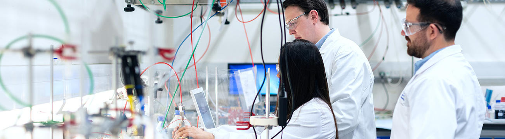

GS바이오 소개
인류의 미래와 행복을 완성할 에너지의 새로운 가치를 추구합니다.
GS Bio is committed to exceeding all your expectations in the ever changing world.

| 상호 |
GS바이오(주) |
설립일 |
2010.03.12 |
| 대표이사 |
정종수 |
투자규모 |
40,000백만원 |
| 주주구성 |
GS칼텍스(주) 100% |
| 주요사업 |
석유대체연료 제조 및 수출입업 / 보조사료 제조업 |
| 본사 소재지 |
전남 여수시 여수산단로 923-106(적량동) |
안녕하십니까? GS바이오 대표이사 정종수입니다.
당사 홈페이지를 방문해 주신 여러분 반갑습니다.
GS바이오는 2010년 바이오에너지 전문기업으로 설립되어
국내 바이오 에너지 보급의 한 축을 담당하고 있으며,
끊임없는 도전과 변화를 통하여 바이오에너지 선도기업으로 발전해 왔습니다.
GS바이오는 이에 만족하지 않고
바이오에너지를 통해 모두 함께 행복해질 수 있는 세상을
만들기 위해 임직원의 모든 역량과 지혜를 결집해 나아가겠습니다.
항상 GS바이오를 아껴 주시고 사랑해 주시는
모든 고객 여러분들께 진심으로 감사드립니다.
GS바이오 주식회사
대표이사 정종수
연혁
친환경 대체에너지 개발로 지구환경을 보존하고
인류의 건강한 삶을위해 항상 노력하는 기업이 되겠습니다.
2020
친환경 대체에너지 전문기업으로의 성장
-
2014
- 석유대체연료 제조 수출입업 변경 등록(산업통산 자원부)
- 발전용 바이오증유 시범보급 생산업자 지정(산업통산 자원부)
-
2013
-
2012
- 연구개발 전담부서 설립(한국산업기술 진흥협회)
- 바이오디젤 공급 계약 체결(GS칼텍스)
-
2011
- 바이오디젤 생산.해외자원 개발 MOU체결
- 바이오디젤 생산 공장 기계적 준공
- 석유대체연료 제조.수출입업 등록
- 항진균용 사료 조성물 특허출원
-
2010
- 바이오디젤 Plant 기본설계 완료
- 산업단지 입주계약 체결(한국산업단지공단)
- 설립 등기
조직가치
우리는 신뢰, 유연, 도전, 탁월을 바탕으로 GSC Way 실천을 통해 비전을 달성합니다.